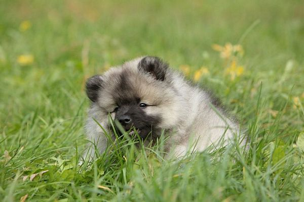

Если Вы твердо решили какой породы щенка собираетесь приобрести, следующим вопросом, как правило, стоит выбор пола вашего будущего питомца.
На вопрос «Кто лучше – сука или кобель?» ответить Вам не сможет никто. Тут всё очень индивидуально: то, что является плюсом для одного, – большой минус для другого. То есть здесь абсолютно всё зависит исключительно от Ваших личных предпочтений.
Не ставьте выбор пола щенка кеесхонда во главу угла. По мере взросления щенка вы скорее всего приспособитесь к тем или иным нюансам, и вы не сможете себе представить, чтобы у вас была собака другого пола.
В целом, определяясь с выбором пола нужно решить, что Вас меньше пугает – постоянная сексуальность кобеля или редкие (примерно 2 раза в год) течки суки.
Стоит учитывать, что выбор пола кеехонда зависит и от Вашего характера. Бытует мнение, что суки более послушные и спокойные, а кобели упрямые и трудные в воспитании. Но это не совсем верно, потому что очень много зависит от характера, темперамента собаки, которые достаются в наследство от родителей. Так что вероятность появления в Вашей семье суки, с которой Вы будете справляться с трудом, так же реальна, как и того, что Ваш кобель будет обладать мягким и покладистым нравом.
Хотя характер и темперамент у щенков индивидуален, общие принципы и нормы поведения, присущие определенному полу, конечно же, существуют. У собак разных полов есть отличительные черты, которые обязательно будут присущи Вашей собаке.
Обычно кобели кеесхонда более яркие, выразительные, с богатым воротником, с мужественной, тяжелой головой. Суки - более изящные, с менее обильной шерстью, но с более аккуратной, женственной головой.
Суки кеесхонда чаще более изобретательны, хитры, умны и артистичны. Суки ласковее, спокойнее, привязчивее к хозяину. Они послушны, и в большинстве своём в человеке они безоговорочно признают лидера. Суки не страдают отсутствием аппетита, они легко поддаются дрессировке.
Кобели - более прямолинейны в своих целях. Кобелиная любовь к хозяину безгранична и подкупающе проста.
Кобели более привязываются и сильнее переживают разлуку. У сук в жизни больше интересов, и потеряв что-то - она может найти нечто другое, не менее ценное.
Физиологические различия отражаются на особенностях содержания вольфшпицев. Кобелей нужно дольше выгуливать, так как им необходимо пометить территорию. Для них характерна повышенная сексуальность (особенно первые 3 года), поэтому он легко может убежать за течной сукой.
Во время прогулок между кобелями возможны конфликты.
Сука же вне периода течки сексуально нейтральна, она охотно играет с другими собаками, но с наступлением течки может проявлять агрессию к другим сукам. Обычно это не доставляет хлопот, так как в это время прогулки проходят вдали от привычного места выгула, чтобы избежать контактов с навязчивыми «кавалерами».
Помните, что если есть сука, ее НЕ обязательно вязать. Вязки для здоровья - это заблуждение! Беременность и роды для суки - это испытание для здоровья.
Если учитывать пол собаки и ее хозяина, то исследователями отношений и психологами широко признается так называемое «правило перекрещивания». Это означает, что кобель больше всего подходит хозяйке, а сука хозяину. Собаки четко различают пол людей - суки бывают агрессивны по отношению к женщинам, а кобели к мужчинам - возможны и такие проблемы. Поэтому очень важным является тот факт, кто в семье в первую очередь будет заботиться о новом члене семьи.
{kind=link}